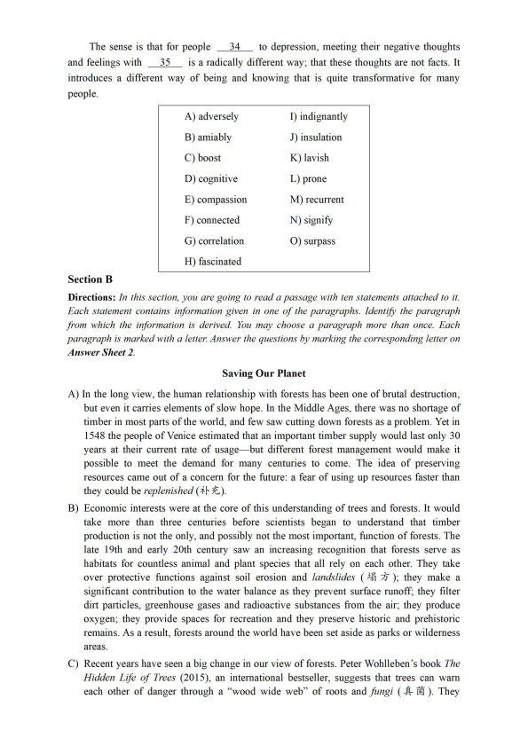
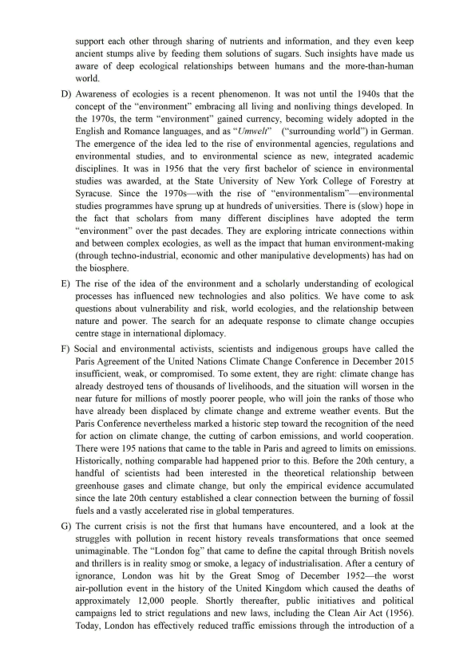
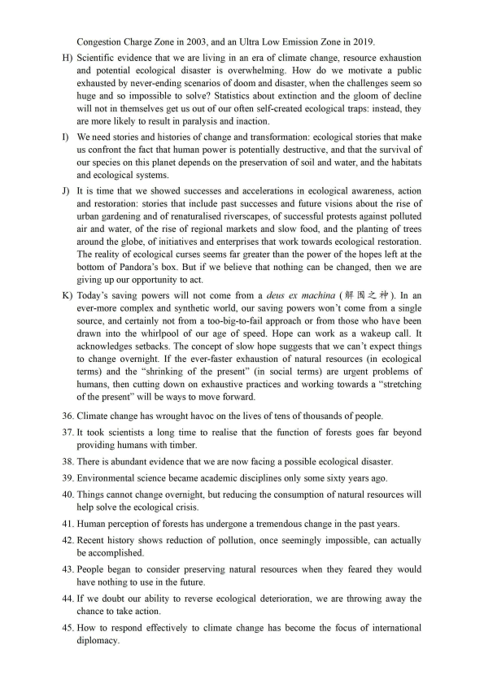
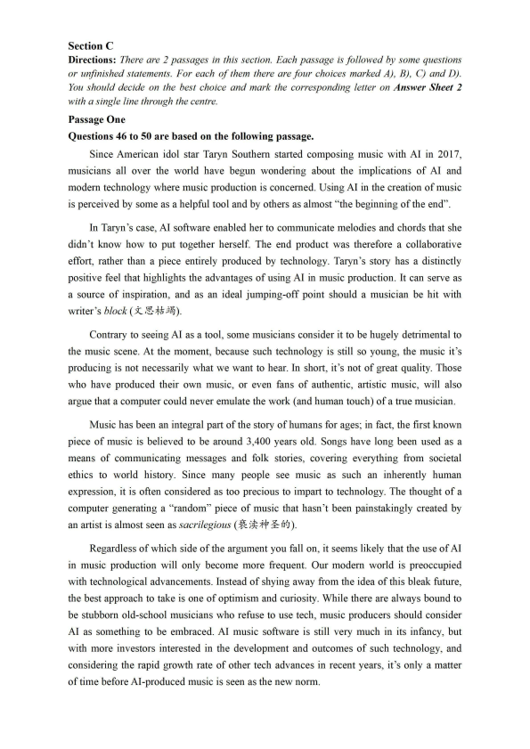
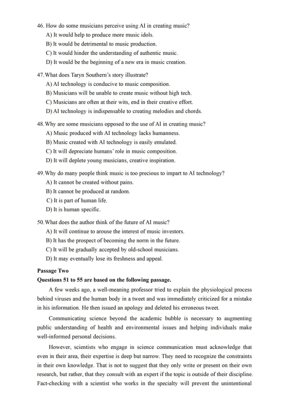
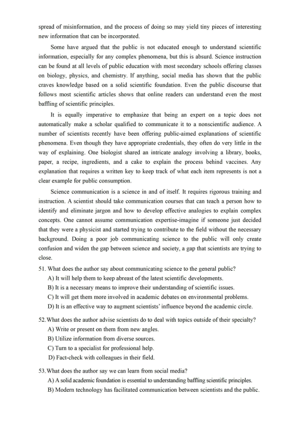
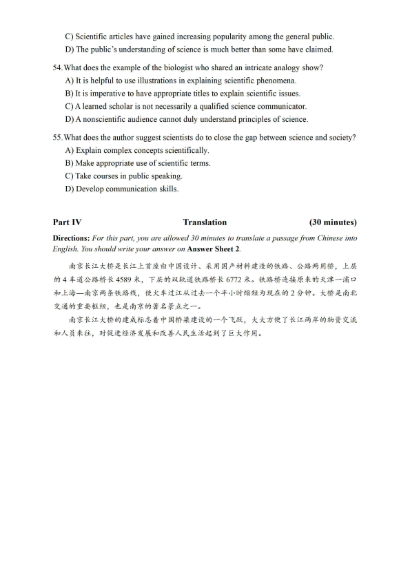

第 1 / 8 页

2022年06 月大学英语六级考试真题(第2 套)
Part I
Writing
(30minutes)
Directions: For this part, you are allowed 30 minutes to write an essay that begins with the
sentence “Nowadays more and more people keep learning new skills to adapt to a
fast-changing world." You can make comments, cite examples, or use your personal experiences
to develop your essay. You should write at least 150 words but no more than 200 words.
Part II
Listening Comprehension
(30 minutes)
Part III
Reading Comprehension
(40 minutes)
Section A
Directionsr In this section, there is a passage with ten blanks. You are required to select one
word for each blank from a list of choices given in a 'word bank following the passage. Read the
passage through carefully before making your choices, Each choice in the bank
is identified
by a letter. Please mark the corresponding letter for each item on Answer Sheet 2 with a single
line through the centre. You may not use any of the words in the bank more than once.
Thinking kind thoughts about yourself and your loved ones can prove beneficial for
your overall wellbeing, empirical evidence has shown. Researchers carried out an
investigation to explore the
26
between having kind thoughts and a person's
psychological state.
For the study, five groups of participants were presented with a different set of audio
instructions, some of which encouraged the participants to think
27
about themselves
and others which persuaded them to think in a self^critical manner. After listening to the
audio instructions, the participants were asked to answer a series of questions. These
included whether they felt agitated, how likely they were to show kindness to themselves
and how
28
they felt to other individuals.
The participants who were instructed to think kindly about themselves were more
likely to exhibit a bodily response associated with being relaxed and feeling safe. Their
heart rates also dropped, which is a healthy sign of a heart that can respond flexibly to
situations. Yet,
29
, those who listened to the critical audio clips were noted as having
a higher heart rate and sweat response afterwards, both of which
30
feelings of threat
and distress.
Having the ability to switch off the body's natural threat response can
31
a person's
immune system. This, in turn, gives them a greater likelihood of recovering quickly from
illness. These findings help us to further understand some of our clinical trials research
findings, where we show that individuals with
32
depression benefit particularly from
self-awareness-based
33
therapy. They essentially learn to become more sympathetic
to themselves.
提示：2022年6月本套听力内容与第一套完全一致，只是选项顺序不同，故而未重复显示。
查看 / 复制本页文字
2022年06 月大学英语六级考试真题(第2 套) Part I Writing (30minutes) Directions: For this part, you are allowed 30 minutes to write an essay that begins with the sentence “Nowadays more and more people keep learning new skills to adapt to a fast-changing world." You can make comments, cite examples, or use your personal experiences to develop your essay. You should write at least 150 words but no more than 200 words. Part II Listening Comprehension (30 minutes) Part III Reading Comprehension (40 minutes) Section A Directionsr In this section, there is a passage with ten blanks. You are required to select one word for each blank from a list of choices given in a 'word bank following the passage. Read the passage through carefully before making your choices, Each choice in the bank is identified by a letter. Please mark the corresponding letter for each item on Answer Sheet 2 with a single line through the centre. You may not use any of the words in the bank more than once. Thinking kind thoughts about yourself and your loved ones can prove beneficial for your overall wellbeing, empirical evidence has shown. Researchers carried out an investigation to explore the 26 between having kind thoughts and a person's psychological state. For the study, five groups of participants were presented with a different set of audio instructions, some of which encouraged the participants to think 27 about themselves and others which persuaded them to think in a self^critical manner. After listening to the audio instructions, the participants were asked to answer a series of questions. These included whether they felt agitated, how likely they were to show kindness to themselves and how 28 they felt to other individuals. The participants who were instructed to think kindly about themselves were more likely to exhibit a bodily response associated with being relaxed and feeling safe. Their heart rates also dropped, which is a healthy sign of a heart that can respond flexibly to situations. Yet, 29 , those who listened to the critical audio clips were noted as having a higher heart rate and sweat response afterwards, both of which 30 feelings of threat and distress. Having the ability to switch off the body's natural threat response can 31 a person's immune system. This, in turn, gives them a greater likelihood of recovering quickly from illness. These findings help us to further understand some of our clinical trials research findings, where we show that individuals with 32 depression benefit particularly from self-awareness-based 33 therapy. They essentially learn to become more sympathetic to themselves. 提示：2022年6月本套听力内容与第一套完全一致，只是选项顺序不同，故而未重复显示。
第 2 / 8 页

The sense is that for people
34
to depression, meeting their negative thoughts
and feelings with
35
is a radically different way; that these thoughts are not facts. It
introduces a different way of being and knowing that is quite transformative for many
people.
A) adversely
I) indignantly
B) amiably
J) insulation
C) boost
K) lavish
D) cognitive
L) prone
E) compassion
M) recurrent
F) connected
N) signify
G) correlation
0) surpass
H) fascinated
Section B
Directions: In this section, you are going to read a passage with ten statements attached to it.
Each statement contains information given in one o f the paragraphs. Identify the paragraph
from which the information is derived. You may choose a paragraph more than once. Each
paragraph is marked with a letter. Answer the questions by marking the corresponding letter on
Answer Sheet 2.
Saving Our Planet
A) In the long view, the human relationship with forests has been one of brutal destruction,
but even it carries elements of slow hope. In the Middle Ages, there was no shortage of
timber in most parts of the world, and few saw cutting down forests as a problem. Yet in
1548 the people of Venice estimated that an important timber supply would last only 30
years at their current rate of usage- but different forest management would make it
possible to meet the demand for many centuries to come. The idea of preserving
resources came out of a concern for the future: a fear of using up resources faster than
they could be replenished (补 充).
B) Economic interests were at the core of this understanding of trees and forests. It would
take more than three centuries before scientists began to understand that timber
production is not the only, and possibly not the most important, function of forests. The
late 19th and early 20th century saw an increasing recognition that forests serve as
habitats for countless animal and plant species that all rely on each other. They take
over protective functions against soil erosion and landslides (塌方)；they make a
significant contribution to the water balance as they prevent surface runoff; they filter
dirt particles, greenhouse gases and radioactive substances from the air; they produce
oxygen; they provide spaces for recreation and they preserve historic and prehistoric
remains. As a result, forests around the world have been set aside as parks or wilderness
areas.
C) Recent years have seen a big change in our view of forests. Peter Wohlleben's book The
Hidden Life o f Trees (2015), an international bestseller, suggests that trees can warn
each other of danger through a “wood wide web“ of roots and fungi (真菌).They
查看 / 复制本页文字
The sense is that for people 34 to depression, meeting their negative thoughts and feelings with 35 is a radically different way; that these thoughts are not facts. It introduces a different way of being and knowing that is quite transformative for many people. A) adversely I) indignantly B) amiably J) insulation C) boost K) lavish D) cognitive L) prone E) compassion M) recurrent F) connected N) signify G) correlation 0) surpass H) fascinated Section B Directions: In this section, you are going to read a passage with ten statements attached to it. Each statement contains information given in one o f the paragraphs. Identify the paragraph from which the information is derived. You may choose a paragraph more than once. Each paragraph is marked with a letter. Answer the questions by marking the corresponding letter on Answer Sheet 2. Saving Our Planet A) In the long view, the human relationship with forests has been one of brutal destruction, but even it carries elements of slow hope. In the Middle Ages, there was no shortage of timber in most parts of the world, and few saw cutting down forests as a problem. Yet in 1548 the people of Venice estimated that an important timber supply would last only 30 years at their current rate of usage- but different forest management would make it possible to meet the demand for many centuries to come. The idea of preserving resources came out of a concern for the future: a fear of using up resources faster than they could be replenished (补 充). B) Economic interests were at the core of this understanding of trees and forests. It would take more than three centuries before scientists began to understand that timber production is not the only, and possibly not the most important, function of forests. The late 19th and early 20th century saw an increasing recognition that forests serve as habitats for countless animal and plant species that all rely on each other. They take over protective functions against soil erosion and landslides (塌方)；they make a significant contribution to the water balance as they prevent surface runoff; they filter dirt particles, greenhouse gases and radioactive substances from the air; they produce oxygen; they provide spaces for recreation and they preserve historic and prehistoric remains. As a result, forests around the world have been set aside as parks or wilderness areas. C) Recent years have seen a big change in our view of forests. Peter Wohlleben's book The Hidden Life o f Trees (2015), an international bestseller, suggests that trees can warn each other of danger through a “wood wide web“ of roots and fungi (真菌).They
第 3 / 8 页

support each other through sharing of nutrients and information, and they even keep
ancient stumps alive by feeding them solutions of sugars. Such insights have made us
aware of deep ecological relationships between humans and the more-than-human
world.
D) Awareness of ecologies is a recent phenomenon. It was not until the 1940s that the
concept of the “environment“ embracing all living and nonliving things developed. In
the 1970s, the term “environment" gained currency, becoming widely adopted in the
English and Romance languages, and as ccUmwelC
("'surrounding world^^) in German.
The emergence of the idea led to the rise of environmental agencies, regulations and
environmental studies, and to environmental science as new, integrated academic
disciplines. It was in 1956 that the very first bachelor of science in environmental
studies was awarded, at the State University of New York College of Forestry at
Syracuse. Since the 1970s- with the rise of “environmentalism"- environmental
studies programmes have sprung up at hundreds of universities. There is (slow) hope in
the fact that scholars from many different disciplines have adopted the term
“environment" over the past decades. They are exploring intricate connections within
and between complex ecologies, as well as the impact that human environment-making
(through techno-industrial, economic and other manipulative developments) has had on
the biosphere.
E) The rise of the idea of the environment and a scholarly understanding of ecological
processes has influenced new technologies and also politics. We have come to ask
questions about vulnerability and risk, world ecologies, and the relationship between
nature and power. The search for an adequate response to climate change occupies
centre stage in international diplomacy.
F) Social and environmental activists, scientists and indigenous groups have called the
Paris Agreement of the United Nations Climate Change Conference in December 2015
insufficient, weak, or compromised. To some extent, they are right: climate change has
already destroyed tens of thousands of livelihoods, and the situation will worsen in the
near future for millions of mostly poorer people, who will join the ranks of those who
have already been displaced by climate change and extreme weather events. But the
Paris Conference nevertheless marked a historic step toward the recognition of the need
for action on climate change, the cutting of carbon emissions, and world cooperation.
There were 195 nations that came to the table in Paris and agreed to limits on emissions.
Historically, nothing comparable had happened prior to this. Before the 20th century, a
handful of scientists had been interested in the theoretical relationship between
greenhouse gases and climate change, but only the empirical evidence accumulated
since the late 20th century established a clear connection between the burning of fossil
fuels and a vastly accelerated rise in global temperatures.
G) The current crisis is not the first that humans have encountered, and a look at the
struggles with pollution in recent history reveals transformations that once seemed
unimaginable. The "London fbg?, that came to define the capital through British novels
and thrillers is in reality smog or smoke, a legacy of industrialisation. After a century of
ignorance, London was hit by the Great Smog of December 1952- the worst
air-pollution event in the history of the United Kingdom which caused the deaths of
approximately 12,000 people. Shortly thereafter, public initiatives and political
campaigns led to strict regulations and new laws, including the Clean Air Act (1956).
Today, London has effectively reduced traffic emissions through the introduction of a
查看 / 复制本页文字
support each other through sharing of nutrients and information, and they even keep
ancient stumps alive by feeding them solutions of sugars. Such insights have made us
aware of deep ecological relationships between humans and the more-than-human
world.
D) Awareness of ecologies is a recent phenomenon. It was not until the 1940s that the
concept of the “environment“ embracing all living and nonliving things developed. In
the 1970s, the term “environment" gained currency, becoming widely adopted in the
English and Romance languages, and as ccUmwelC
("'surrounding world^^) in German.
The emergence of the idea led to the rise of environmental agencies, regulations and
environmental studies, and to environmental science as new, integrated academic
disciplines. It was in 1956 that the very first bachelor of science in environmental
studies was awarded, at the State University of New York College of Forestry at
Syracuse. Since the 1970s- with the rise of “environmentalism"- environmental
studies programmes have sprung up at hundreds of universities. There is (slow) hope in
the fact that scholars from many different disciplines have adopted the term
“environment" over the past decades. They are exploring intricate connections within
and between complex ecologies, as well as the impact that human environment-making
(through techno-industrial, economic and other manipulative developments) has had on
the biosphere.
E) The rise of the idea of the environment and a scholarly understanding of ecological
processes has influenced new technologies and also politics. We have come to ask
questions about vulnerability and risk, world ecologies, and the relationship between
nature and power. The search for an adequate response to climate change occupies
centre stage in international diplomacy.
F) Social and environmental activists, scientists and indigenous groups have called the
Paris Agreement of the United Nations Climate Change Conference in December 2015
insufficient, weak, or compromised. To some extent, they are right: climate change has
already destroyed tens of thousands of livelihoods, and the situation will worsen in the
near future for millions of mostly poorer people, who will join the ranks of those who
have already been displaced by climate change and extreme weather events. But the
Paris Conference nevertheless marked a historic step toward the recognition of the need
for action on climate change, the cutting of carbon emissions, and world cooperation.
There were 195 nations that came to the table in Paris and agreed to limits on emissions.
Historically, nothing comparable had happened prior to this. Before the 20th century, a
handful of scientists had been interested in the theoretical relationship between
greenhouse gases and climate change, but only the empirical evidence accumulated
since the late 20th century established a clear connection between the burning of fossil
fuels and a vastly accelerated rise in global temperatures.
G) The current crisis is not the first that humans have encountered, and a look at the
struggles with pollution in recent history reveals transformations that once seemed
unimaginable. The "London fbg?, that came to define the capital through British novels
and thrillers is in reality smog or smoke, a legacy of industrialisation. After a century of
ignorance, London was hit by the Great Smog of December 1952- the worst
air-pollution event in the history of the United Kingdom which caused the deaths of
approximately 12,000 people. Shortly thereafter, public initiatives and political
campaigns led to strict regulations and new laws, including the Clean Air Act (1956).
Today, London has effectively reduced traffic emissions through the introduction of a
第 4 / 8 页

Congestion Charge Zone in 2003, and an Ultra Low Emission Zone in 2019.
H) Scientific evidence that we are living in an era of climate change, resource exhaustion
and potential ecological disaster is overwhelming. How do we motivate a public
exhausted by never-ending scenarios of doom and disaster, when the challenges seem so
huge and so impossible to solve? Statistics about extinction and the gloom of decline
will not in themselves get us out of our often self^created ecological traps: instead, they
are more likely to result in paralysis and inaction.
I) We need stories and histories of change and transformation: ecological stories that make
us confront the fact that human power is potentially destructive, and that the survival of
our species on this planet depends on the preservation of soil and water, and the habitats
and ecological systems.
J) It is time that we showed successes and accelerations in ecological awareness, action
and restoration: stories that include past successes and future visions about the rise of
urban gardening and of renaturalised riverscapes, of successful protests against polluted
air and water, of the rise of regional markets and slow food, and the planting of trees
around the globe, of initiatives and enterprises that work towards ecological restoration.
The reality of ecological curses seems far greater than the power of the hopes left at the
bottom of Pandora's box. But if we believe that nothing can be changed, then we are
giving up our opportunity to act.
K) Today9s saving powers will not come from a deus ex machina (解围之 4中).In an
ever-more complex and synthetic world, our saving powers won't come from a single
source, and certainly not from a too-big-to-fail approach or from those who have been
drawn into the whirlpool of our age of speed. Hope can work as a wakeup call. It
acknowledges setbacks. The concept of slow hope suggests that we can't expect things
to change overnight. If the ever-faster exhaustion of natural resources (in ecological
terms) and the "'shrinking of the present^^ (in social terms) are urgent problems of
humans, then cutting down on exhaustive practices and working towards a "stretching
of the present" will be ways to move forward.
36. Climate change has wrought havoc on the lives of tens of thousands of people.
37. It took scientists a long time to realise that the function of forests goes far beyond
providing humans with timber.
38. There is abundant evidence that we are now facing a possible ecological disaster.
39. Environmental science became academic disciplines only some sixty years ago.
40. Things cannot change overnight, but reducing the consumption of natural resources will
help solve the ecological crisis.
41. Human perception of forests has undergone a tremendous change in the past years.
42. Recent history shows reduction of pollution, once seemingly impossible, can actually
be accomplished.
43. People began to consider preserving natural resources when they feared they would
have nothing to use in the future.
44. If we doubt our ability to reverse ecological deterioration, we are throwing away the
chance to take action.
45. How to respond effectively to climate change has become the focus of international
diplomacy.
查看 / 复制本页文字
Congestion Charge Zone in 2003, and an Ultra Low Emission Zone in 2019. H) Scientific evidence that we are living in an era of climate change, resource exhaustion and potential ecological disaster is overwhelming. How do we motivate a public exhausted by never-ending scenarios of doom and disaster, when the challenges seem so huge and so impossible to solve? Statistics about extinction and the gloom of decline will not in themselves get us out of our often self^created ecological traps: instead, they are more likely to result in paralysis and inaction. I) We need stories and histories of change and transformation: ecological stories that make us confront the fact that human power is potentially destructive, and that the survival of our species on this planet depends on the preservation of soil and water, and the habitats and ecological systems. J) It is time that we showed successes and accelerations in ecological awareness, action and restoration: stories that include past successes and future visions about the rise of urban gardening and of renaturalised riverscapes, of successful protests against polluted air and water, of the rise of regional markets and slow food, and the planting of trees around the globe, of initiatives and enterprises that work towards ecological restoration. The reality of ecological curses seems far greater than the power of the hopes left at the bottom of Pandora's box. But if we believe that nothing can be changed, then we are giving up our opportunity to act. K) Today9s saving powers will not come from a deus ex machina (解围之 4中).In an ever-more complex and synthetic world, our saving powers won't come from a single source, and certainly not from a too-big-to-fail approach or from those who have been drawn into the whirlpool of our age of speed. Hope can work as a wakeup call. It acknowledges setbacks. The concept of slow hope suggests that we can't expect things to change overnight. If the ever-faster exhaustion of natural resources (in ecological terms) and the "'shrinking of the present^^ (in social terms) are urgent problems of humans, then cutting down on exhaustive practices and working towards a "stretching of the present" will be ways to move forward. 36. Climate change has wrought havoc on the lives of tens of thousands of people. 37. It took scientists a long time to realise that the function of forests goes far beyond providing humans with timber. 38. There is abundant evidence that we are now facing a possible ecological disaster. 39. Environmental science became academic disciplines only some sixty years ago. 40. Things cannot change overnight, but reducing the consumption of natural resources will help solve the ecological crisis. 41. Human perception of forests has undergone a tremendous change in the past years. 42. Recent history shows reduction of pollution, once seemingly impossible, can actually be accomplished. 43. People began to consider preserving natural resources when they feared they would have nothing to use in the future. 44. If we doubt our ability to reverse ecological deterioration, we are throwing away the chance to take action. 45. How to respond effectively to climate change has become the focus of international diplomacy.
第 5 / 8 页

Section C
Directions: There are 2 passages in this section. Each passage is followed by some questions
or unfinished statements. For each of them there are four choices marked A), B), C) and D).
You should decide on the best choice and mark the corresponding letter on Answer Sheet 2
with a single line through the centre.
Passage One
Questions 46 to 50 are based on the following passage.
Since American idol star Taryn Southern started composing music with AI in 2017,
musicians all over the world have begun wondering about the implications of AI and
modem technology where music production is concerned. Using AI in the creation of music
is perceived by some as a helpful tool and by others as almost ccthe beginning of the end”.
In Taryn's case, AI software enabled her to communicate melodies and chords that she
didn't know how to put together herself. The end product was therefore a collaborative
effort, rather than a piece entirely produced by technology. Taryn's story has a distinctly
positive feel that highlights the advantages of using AI in music production. It can serve as
a source of inspiration, and as an ideal jumping-off point should a musician be hit with
writer's b/oc左(文思枯竭).
Contrary to seeing AI as a tool, some musicians consider it to be hugely detrimental to
the music scene. At the moment, because such technology is still so young, the music it's
producing is not necessarily what we want to hear. In short, it's not of great quality. Those
who have produced their own music, or even fans of authentic, artistic music, will also
argue that a computer could never emulate the work (and human touch) of a true musician.
Music has been an integral part of the story of humans for ages; in fact, the first known
piece of music is believed to be around 3,400 years old. Songs have long been used as a
means of communicating messages and folk stories, covering everything from societal
ethics to world history. Since many people see music as such an inherently human
expression, it is often considered as too precious to impart to technology. The thought of a
computer generating a “random“ piece of music that hasn't been painstakingly created by
an artist is almost seen as sacrilegious (亵渎神圣的).
Regardless of which side of the argument you fall on, it seems likely that the use of AI
in music production will only become more frequent. Our modem world is preoccupied
with technological advancements. Instead of shying away from the idea of this bleak future,
the best approach to take is one of optimism and curiosity. While there are always bound to
be stubborn old-school musicians who refuse to use tech, music producers should consider
AI as something to be embraced. AI music software is still very much in its infancy, but
with more investors interested in the development and outcomes of such technology, and
considering the rapid growth rate of other tech advances in recent years, it's only a matter
of time before Ai-produced music is seen as the new norm.
查看 / 复制本页文字
Section C Directions: There are 2 passages in this section. Each passage is followed by some questions or unfinished statements. For each of them there are four choices marked A), B), C) and D). You should decide on the best choice and mark the corresponding letter on Answer Sheet 2 with a single line through the centre. Passage One Questions 46 to 50 are based on the following passage. Since American idol star Taryn Southern started composing music with AI in 2017, musicians all over the world have begun wondering about the implications of AI and modem technology where music production is concerned. Using AI in the creation of music is perceived by some as a helpful tool and by others as almost ccthe beginning of the end”. In Taryn's case, AI software enabled her to communicate melodies and chords that she didn't know how to put together herself. The end product was therefore a collaborative effort, rather than a piece entirely produced by technology. Taryn's story has a distinctly positive feel that highlights the advantages of using AI in music production. It can serve as a source of inspiration, and as an ideal jumping-off point should a musician be hit with writer's b/oc左(文思枯竭). Contrary to seeing AI as a tool, some musicians consider it to be hugely detrimental to the music scene. At the moment, because such technology is still so young, the music it's producing is not necessarily what we want to hear. In short, it's not of great quality. Those who have produced their own music, or even fans of authentic, artistic music, will also argue that a computer could never emulate the work (and human touch) of a true musician. Music has been an integral part of the story of humans for ages; in fact, the first known piece of music is believed to be around 3,400 years old. Songs have long been used as a means of communicating messages and folk stories, covering everything from societal ethics to world history. Since many people see music as such an inherently human expression, it is often considered as too precious to impart to technology. The thought of a computer generating a “random“ piece of music that hasn't been painstakingly created by an artist is almost seen as sacrilegious (亵渎神圣的). Regardless of which side of the argument you fall on, it seems likely that the use of AI in music production will only become more frequent. Our modem world is preoccupied with technological advancements. Instead of shying away from the idea of this bleak future, the best approach to take is one of optimism and curiosity. While there are always bound to be stubborn old-school musicians who refuse to use tech, music producers should consider AI as something to be embraced. AI music software is still very much in its infancy, but with more investors interested in the development and outcomes of such technology, and considering the rapid growth rate of other tech advances in recent years, it's only a matter of time before Ai-produced music is seen as the new norm.
第 6 / 8 页

46. How do some musicians perceive using AI in creating music?
A) It would help to produce more music idols.
B) It would be detrimental to music production.
C) It would hinder the understanding of authentic music.
D) It would be the beginning of a new era in music creation.
47. What does Taryn Southern's story illustrate?
A) AI technology is conducive to music composition.
B) Musicians will be unable to create music without high tech.
C) Musicians are often at their wits, end in their creative effort.
D) AI technology is indispensable to creating melodies and chords.
48. Why are some musicians opposed to the use of AI in creating music?
A) Music produced with AI technology lacks humanness.
B) Music created with AI technology is easily emulated.
C) It will depreciate humans9 role in music composition.
D) It will deplete young musicians, creative inspiration.
49. Why do many people think music is too precious to impart to AI technology?
A) It cannot be created without pains.
B) It cannot be produced at random.
C) It is part of human life.
D) It is human specific.
50. What does the author think of the future of AI music?
A) It will continue to arouse the interest of music investors.
B) It has the prospect of becoming the norm in the future.
C) It will be gradually accepted by old-school musicians.
D) It may eventually lose its freshness and appeal.
Passage Two
Questions 51 to 55 are based on the following passage.
A few weeks ago, a well-meaning professor tried to explain the physiological process
behind viruses and the human body in a tweet and was immediately criticized for a mistake
in his information. He then issued an apology and deleted his erroneous tweet.
Communicating science beyond the academic bubble is necessary to augmenting
public understanding of health and environmental issues and helping individuals make
well-informed personal decisions.
However, scientists who engage in science communication must acknowledge that
even in their area, their expertise is deep but narrow. They need to recognize the constraints
in their own knowledge. That is not to suggest that they only write or present on their own
research, but rather, that they consult with an expert if the topic is outside of their discipline.
Fact-checking with a scientist who works in the specialty will prevent the unintentional
查看 / 复制本页文字
46. How do some musicians perceive using AI in creating music? A) It would help to produce more music idols. B) It would be detrimental to music production. C) It would hinder the understanding of authentic music. D) It would be the beginning of a new era in music creation. 47. What does Taryn Southern's story illustrate? A) AI technology is conducive to music composition. B) Musicians will be unable to create music without high tech. C) Musicians are often at their wits, end in their creative effort. D) AI technology is indispensable to creating melodies and chords. 48. Why are some musicians opposed to the use of AI in creating music? A) Music produced with AI technology lacks humanness. B) Music created with AI technology is easily emulated. C) It will depreciate humans9 role in music composition. D) It will deplete young musicians, creative inspiration. 49. Why do many people think music is too precious to impart to AI technology? A) It cannot be created without pains. B) It cannot be produced at random. C) It is part of human life. D) It is human specific. 50. What does the author think of the future of AI music? A) It will continue to arouse the interest of music investors. B) It has the prospect of becoming the norm in the future. C) It will be gradually accepted by old-school musicians. D) It may eventually lose its freshness and appeal. Passage Two Questions 51 to 55 are based on the following passage. A few weeks ago, a well-meaning professor tried to explain the physiological process behind viruses and the human body in a tweet and was immediately criticized for a mistake in his information. He then issued an apology and deleted his erroneous tweet. Communicating science beyond the academic bubble is necessary to augmenting public understanding of health and environmental issues and helping individuals make well-informed personal decisions. However, scientists who engage in science communication must acknowledge that even in their area, their expertise is deep but narrow. They need to recognize the constraints in their own knowledge. That is not to suggest that they only write or present on their own research, but rather, that they consult with an expert if the topic is outside of their discipline. Fact-checking with a scientist who works in the specialty will prevent the unintentional
第 7 / 8 页

spread of misinformation, and the process of doing so may yield tiny pieces of interesting
new information that can be incorporated.
Some have argued that the public is not educated enough to understand scientific
information, especially for any complex phenomena, but this is absurd. Science instruction
can be found at all levels of public education with most secondary schools offering classes
on biology, physics, and chemistry. If anything, social media has shown that the public
craves knowledge based on a solid scientific foundation. Even the public discourse that
follows most scientific articles shows that online readers can understand even the most
baffling of scientific principles.
It is equally imperative to emphasize that being an expert on a topic does not
automatically make a scholar qualified to communicate it to a nonscientific audience. A
number of scientists recently have been offering public-aimed explanations of scientific
phenomena. Even though they have appropriate credentials, they often do very little in the
way of explaining. One biologist shared an intricate analogy involving a library, books,
paper, a recipe, ingredients, and a cake to explain the process behind vaccines. Any
explanation that requires a written key to keep track of what each item represents is not a
clear example for public consumption.
Science communication is a science in and of itself. It requires rigorous training and
instruction. A scientist should take communication courses that can teach a person how to
identify and eliminate jargon and how to develop effective analogies to explain complex
concepts. One cannot assume communication expertise-imagine if someone just decided
that they were a physicist and started trying to contribute to the field without the necessary
background. Doing a poor job communicating science to the public will only create
confusion and widen the gap between science and society, a gap that scientists are trying to
close.
51. What does the author say about communicating science to the general public?
A) It will help them to keep abreast of the latest scientific developments.
B) It is a necessary means to improve their understanding of scientific issues.
C) It will get them more involved in academic debates on environmental problems.
D) It is an effective way to augment scientists9 influence beyond the academic circle.
52. What does the author advise scientists do to deal with topics outside of their specialty?
A) Write or present on them from new angles.
B) Utilize information from diverse sources.
C) Turn to a specialist for professional help.
D) Fact-check with colleagues in their field.
53. What does the author say we can learn from social media?
A) A solid academic foundation is essential to understanding baffling scientific principles.
B) Modem technology has facilitated communication between scientists and the public.
查看 / 复制本页文字
spread of misinformation, and the process of doing so may yield tiny pieces of interesting new information that can be incorporated. Some have argued that the public is not educated enough to understand scientific information, especially for any complex phenomena, but this is absurd. Science instruction can be found at all levels of public education with most secondary schools offering classes on biology, physics, and chemistry. If anything, social media has shown that the public craves knowledge based on a solid scientific foundation. Even the public discourse that follows most scientific articles shows that online readers can understand even the most baffling of scientific principles. It is equally imperative to emphasize that being an expert on a topic does not automatically make a scholar qualified to communicate it to a nonscientific audience. A number of scientists recently have been offering public-aimed explanations of scientific phenomena. Even though they have appropriate credentials, they often do very little in the way of explaining. One biologist shared an intricate analogy involving a library, books, paper, a recipe, ingredients, and a cake to explain the process behind vaccines. Any explanation that requires a written key to keep track of what each item represents is not a clear example for public consumption. Science communication is a science in and of itself. It requires rigorous training and instruction. A scientist should take communication courses that can teach a person how to identify and eliminate jargon and how to develop effective analogies to explain complex concepts. One cannot assume communication expertise-imagine if someone just decided that they were a physicist and started trying to contribute to the field without the necessary background. Doing a poor job communicating science to the public will only create confusion and widen the gap between science and society, a gap that scientists are trying to close. 51. What does the author say about communicating science to the general public? A) It will help them to keep abreast of the latest scientific developments. B) It is a necessary means to improve their understanding of scientific issues. C) It will get them more involved in academic debates on environmental problems. D) It is an effective way to augment scientists9 influence beyond the academic circle. 52. What does the author advise scientists do to deal with topics outside of their specialty? A) Write or present on them from new angles. B) Utilize information from diverse sources. C) Turn to a specialist for professional help. D) Fact-check with colleagues in their field. 53. What does the author say we can learn from social media? A) A solid academic foundation is essential to understanding baffling scientific principles. B) Modem technology has facilitated communication between scientists and the public.
第 8 / 8 页

C) Scientific articles have gained increasing popularity among the general public.
D) The public's understanding of science is much better than some have claimed.
54. What does the example of the biologist who shared an intricate analogy show?
A) It is helpful to use illustrations in explaining scientific phenomena.
B) It is imperative to have appropriate titles to explain scientific issues.
C) A learned scholar is not necessarily a qualified science communicator.
D) A nonscientific audience cannot duly understand principles of science.
55. What does the author suggest scientists do to close the gap between science and society?
A) Explain complex concepts scientifically.
B) Make appropriate use of scientific terms.
C) Take courses in public speaking.
D) Develop communication skills.
Part IV
Translation
(30 minutes)
Directions: For this part, you are allowed 30 minutes to translate a passage from Chinese into
English. You should write your answer on Answer Sheet 2.
南京长江大桥是长江上首座由中国设计、采用国产材料建造的铁路、公路两用桥，上层
的4 车道公路桥长4589米，下层的双轨道铁路桥长6772米。铁路桥连接原来的天津一浦口
和上海一南京两条铁路线，使火车过江从过去一个半小时缩短为现在的2 分钟。大桥是南北
交通的重要枢纽，也是南京的著名景点之一。
南京长江大桥的建成标志着中国桥梁建设的一个飞跃，大大方便了长江两岸的物资交流
和人员来往，对促进经济发展和改善人民生活起到了巨大作用。
查看 / 复制本页文字
C) Scientific articles have gained increasing popularity among the general public. D) The public's understanding of science is much better than some have claimed. 54. What does the example of the biologist who shared an intricate analogy show? A) It is helpful to use illustrations in explaining scientific phenomena. B) It is imperative to have appropriate titles to explain scientific issues. C) A learned scholar is not necessarily a qualified science communicator. D) A nonscientific audience cannot duly understand principles of science. 55. What does the author suggest scientists do to close the gap between science and society? A) Explain complex concepts scientifically. B) Make appropriate use of scientific terms. C) Take courses in public speaking. D) Develop communication skills. Part IV Translation (30 minutes) Directions: For this part, you are allowed 30 minutes to translate a passage from Chinese into English. You should write your answer on Answer Sheet 2. 南京长江大桥是长江上首座由中国设计、采用国产材料建造的铁路、公路两用桥，上层 的4 车道公路桥长4589米，下层的双轨道铁路桥长6772米。铁路桥连接原来的天津一浦口 和上海一南京两条铁路线，使火车过江从过去一个半小时缩短为现在的2 分钟。大桥是南北 交通的重要枢纽，也是南京的著名景点之一。 南京长江大桥的建成标志着中国桥梁建设的一个飞跃，大大方便了长江两岸的物资交流 和人员来往，对促进经济发展和改善人民生活起到了巨大作用。